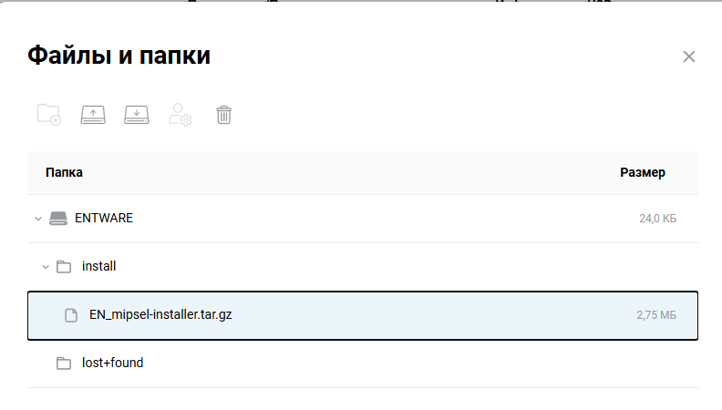
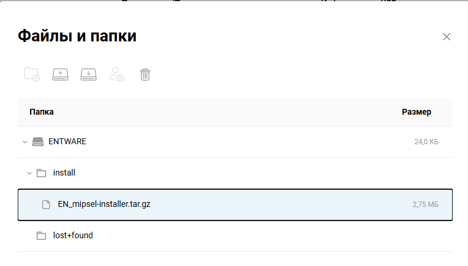

Протестировано на: Keenetic Giga KN-1011/KN-1012, Keenetic Viva KN-1913, Netis N6, Xiaomi MiRouter 3Gv1 (прошивка Keenetic).
Если уже настроено, пропустите этот пункт.
Перейдите в: «Сетевые правила» > «Интернет фильтры» > «Настройка DNS»
Добавьте серверы DNS-over-TLS:
cloudflare-dns.comcloudflare-dns.comdns.google.comdns.google.com
Перейдите по ссылке 192.168.1.1/a, или через «Шестеренку» > «Командная строка».
Поочередно введите команды и нажмите "Отправить"
dns-proxy tls upstream 1.1.1.1 sni cloudflare-dns.com dns-proxy tls upstream 1.0.0.1 sni cloudflare-dns.com dns-proxy tls upstream 8.8.4.4 sni dns.google dns-proxy tls upstream 8.8.8.8 sni dns.google system configuration save


В настройках интернет-соединения включите «Игнорировать DNSv4 интернет-провайдера» (и DNSv6, если используется IPv6).

Отформатируйте USB накопитель в ext4. Используйте утилиты, такие как MiniTool Partition Wizard (не рекомендуется) Paragon Partition Manager, так как Windows не поддерживает ext4 стандартными средствами.
В общих настройках системы "Изменить набор компонентов", установите компонент «Поддержка открытых пакетов» (OPKG).


opkg disk, нажмите Tab, выберите имя флешки (как вы назвали ее при форматировании).
Справка: Для моделей 4G (KN-1212), Omni (KN-1410), Extra (KN-1710/1711/1713), Giga (KN-1010/1011), Ultra (KN-1810), Viva (KN-1910/1912/1913), Giant (KN-2610), Hero 4G (KN-2310/2311), Hopper (KN-3810) и Zyxel Keenetic II / III, Extra, Extra II, Giga II / III, Omni, Omni II, Viva, Ultra, Ultra II используйте для установки архив mipsel
Для моделей Ultra SE (KN-2510), Giga SE (KN-2410), DSL (KN-2010), Skipper DSL (KN-2112), Duo (KN-2110), Ultra SE (KN-2510), Hopper DSL (KN-3610) и Zyxel Keenetic DSL, LTE, VOX используйте для установки архив mips
Для моделей Peak (KN-2710), Ultra (KN-1811), Giga (KN-1012), Hopper (KN-3811) и Hopper SE (KN-3812) используйте архив aarch64

Opkg::Manager: /opt/etc/init.d/doinstall: [5/5] "Entware" installed!
install в корне флешки, загрузите туда инсталлятор. 

Opkg::Manager: /opt/etc/init.d/doinstall: [5/5] "Entware" installed!
Используйте SSH-клиент (PuTTY, Kitty, Termius). Подключитесь к роутеру:
root, пароль: keenetic (смените пароль командой passwd).
Поочередно введите команды:
wget -qO- http://bin.magitrickle.dev/packages/add_repo.sh | sh opkg update && opkg install magitrickle /opt/etc/init.d/S99magitrickle start
Для обновления пакета в дальнейшем можно использовать команду:
opkg update && opkg install magitrickle /opt/etc/init.d/S99magitrickle restart
Magitrickle запущен. Проверить можно через браузер: адрес_роутера:8080

Установите Sing-Box:
opkg install sing-box-go

Создать конфиг можно вручную, или использовать генераторы конфига:
Примечание: 100% работоспособность конфига не гарантируется ввиду отсутствия возможности проверить все конфигурации.
Загрузите конфиг в /opt/etc/sing-box/ (замените стандартный). Я использовал WinSCP. Новое подлючение: адрес роутера, порт 222, логин root, пароль от entware (если не изменили: keenetic).
outboundsoutbounds который является твоим сервером/opt/etc/init.d/S99sing-box start
{
"log": {
"level": "info"
},
"inbounds": [
{
"type": "tun",
"tag": "tun-in",
"interface_name": "singtun0",
"address": [
"172.19.0.1/32"
],
"stack": "gvisor"
}
],
"outbounds": [
{
"type": "selector",
"tag": "select",
"outbounds": [
"auto",
"proxy"
],
"default": "auto",
"interrupt_exist_connections": false
},
{
"type": "urltest",
"tag": "auto",
"outbounds": [
"proxy"
],
"url": "https://www.gstatic.com/generate_204",
"interval": "3m",
"tolerance": 50,
"idle_timeout": "30m",
"interrupt_exist_connections": false
},
// СЮДА ВСТАВЛЯЕШЬ СВОЙ OUTBOUND!!!
{
"type": "block",
"tag": "block"
}
],
"route": {
"rules": [
{
"ip_version": 6,
"outbound": "block"
}
],
"final": "select"
},
"experimental": {
"clash_api": {
"external_controller": "[::]:9090",
"external_ui": "dashboard"
}
}
}
Проверьте конфиг:
sing-box check
Запустите Sing-Box:
/opt/etc/init.d/S99sing-box start
Зайдите через браузер: адрес_роутера:9090

Во вкладке Proxies можем увидеть подключения из конфига и выбрать то, которое будет использоваться для работы интерфейса tun0 (если в конфиге использовался selector).
Перейдите в интерфейс Magitrickle: 192.168.1.1:8080
tun0 или singtun0 (или как вы его обозвали).
2ip.ru, сохраните.Можете создавать разные группы с разными интерфейсами. Дальше ваша фантазия.
Список доменов для разных сервисов можете найти по ссылке iplist.opencck.org (формат «Text», тип «Домены», только wildcard).

Для импорта больших списков можете использовать кнопку "Импортировать список"
Нажимаем "Сохранить изменения"
В интерфейсе Magitrickle доступны следующие типы правил:
example.com.
* и ?. Например, *example.com.
sub.example.com.
dlclark/regexp2. Например, ^[a-z]*example\.com$.